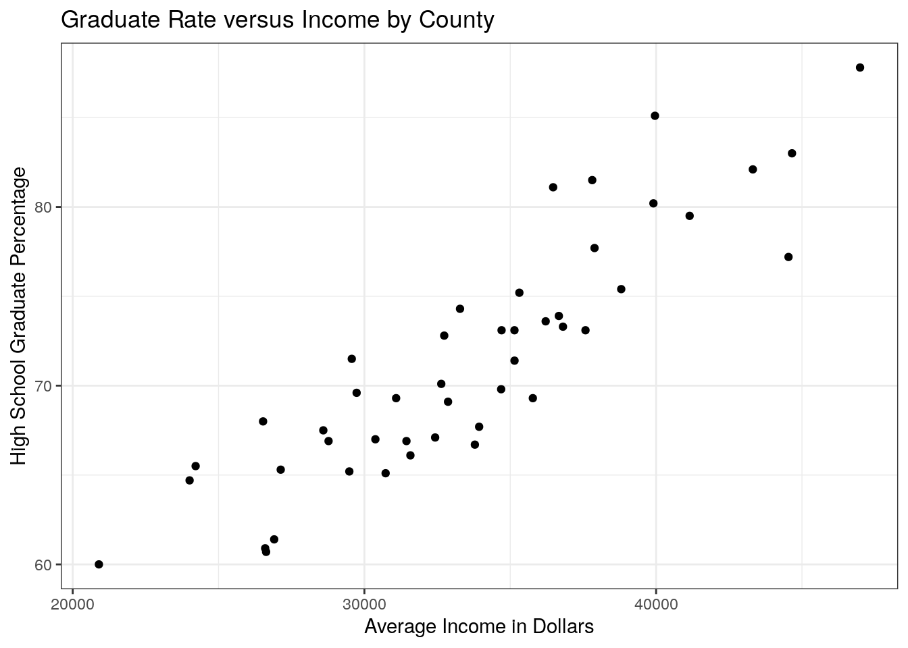
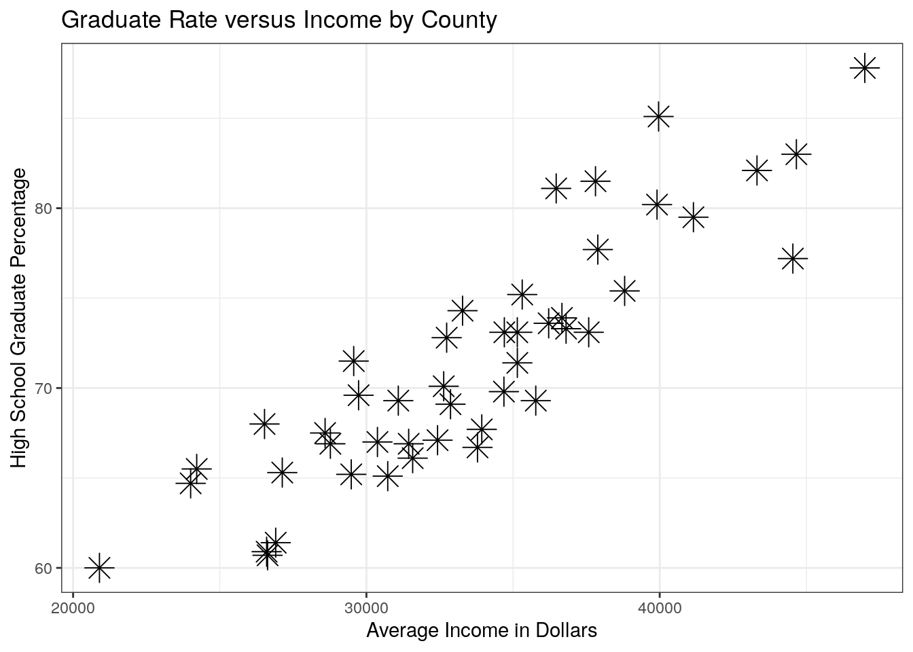
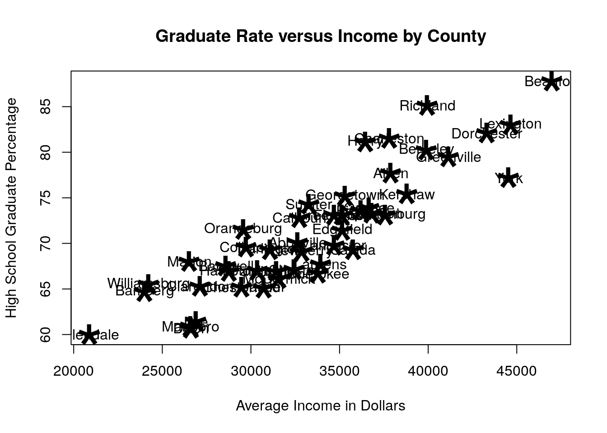
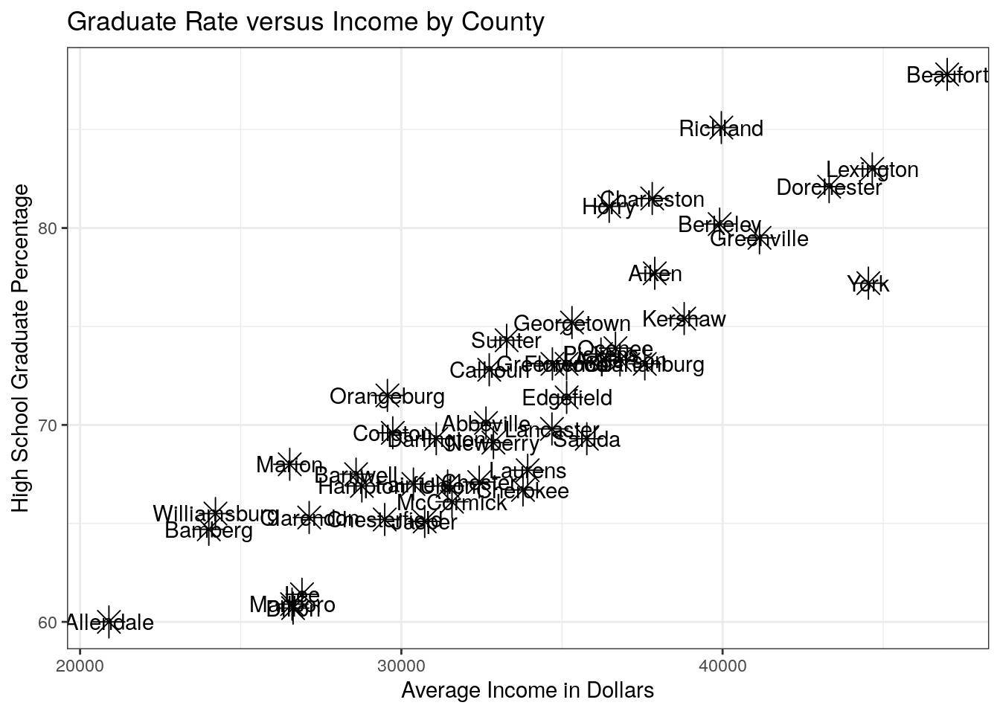
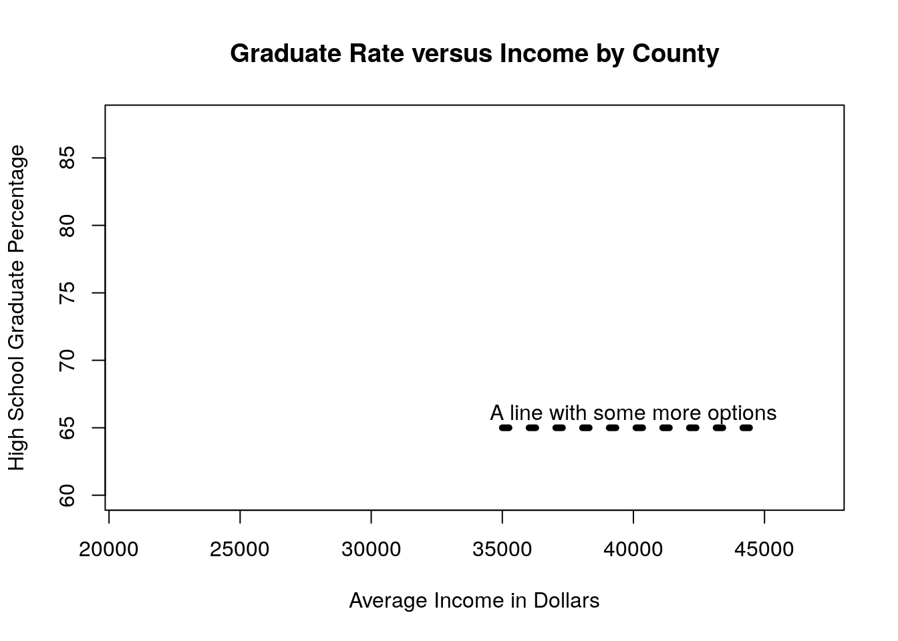
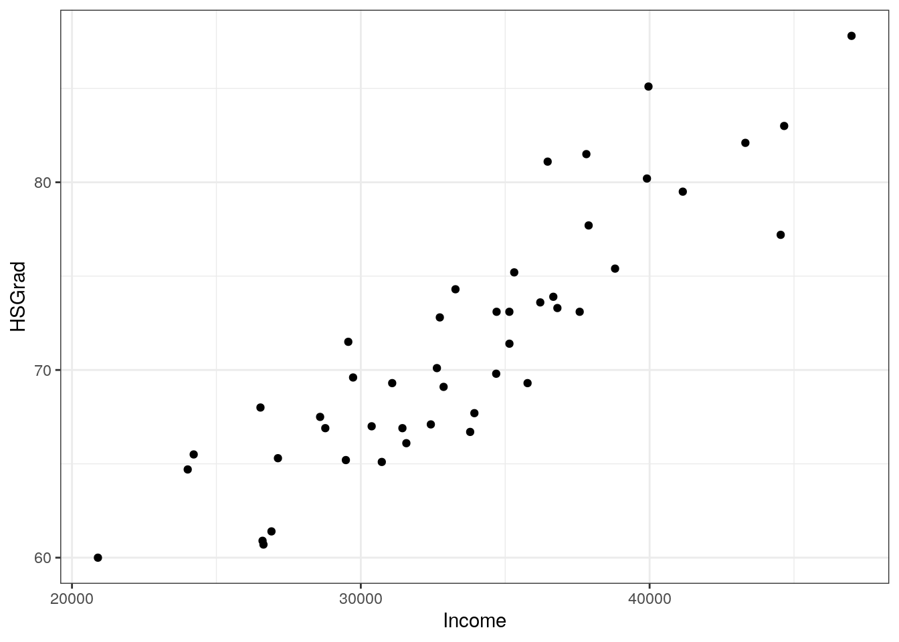
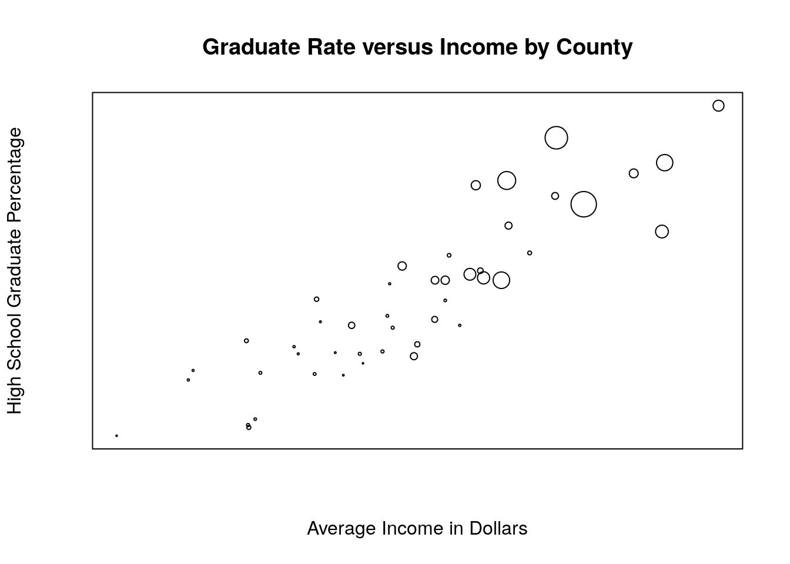
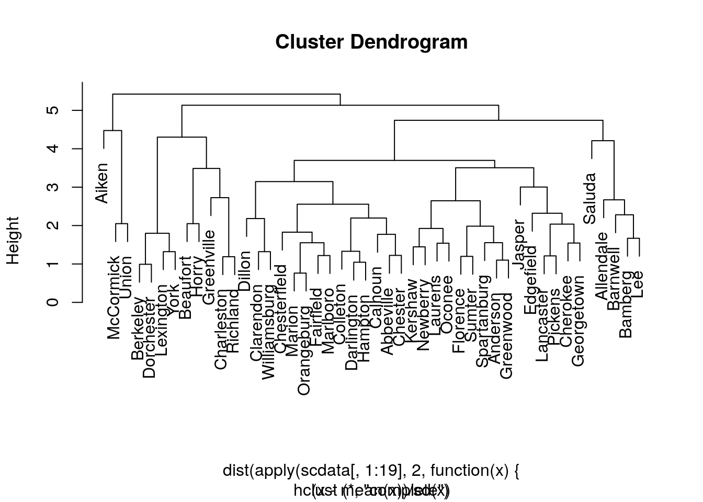
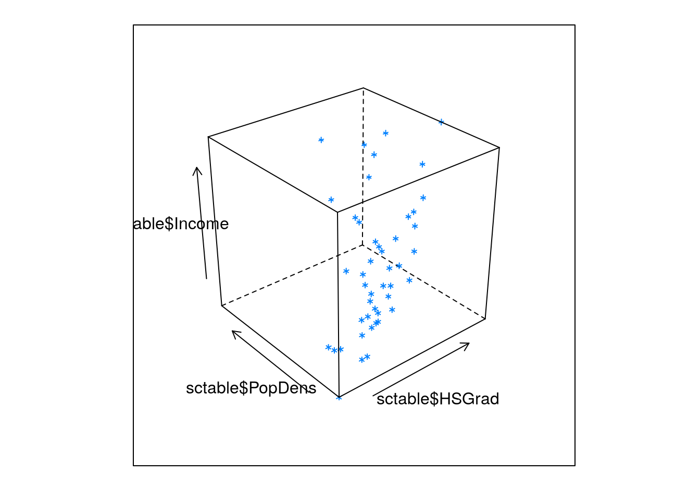

Chapter 4 Graphics
The most basic of the graphics functions are plot, lines, text, and par. Almost everything can be done with these four functions and their many options. You can save the graphics by right-clicking on them or using the jpeg() function (among others).
Say, for example, we want to plot High School Graduation Rate as a function of Income.
library(tidyverse)
sctable <- readr::read_table("data/scdata.txt")
ggplot(sctable, aes(Income, HSGrad)) +
geom_point()
A few things we might want to change here are the x and y labels and the main title…
ggplot(sctable, aes(Income, HSGrad)) +
geom_point() +
labs(x = "Average Income in Dollars",
y = "High School Graduate Percentage",
title = "Graduate Rate versus Income by County")
Changing the symbols being plotted and their size is done by using the parameters shape and size:
ggplot(sctable, aes(Income, HSGrad)) +
geom_point(shape = 8, size = 5) +
labs(x = "Average Income in Dollars",
y = "High School Graduate Percentage",
title = "Graduate Rate versus Income by County")
The details of these and many other functions can be found link to cheatsheet. To add the names of the counties, we could use the text geom:
plot(sctable$Income, sctable$HSGrad,
xlab = "Average Income in Dollars",
ylab = "High School Graduate Percentage",
main = "Graduate Rate versus Income by County",
pch = "*", cex = 5
)
text(sctable$Income, sctable$HSGrad, labels = counties)
Notice that this has the previous symbol underneath the (too-large) words. We can remove that using type=“n” to not plot the points, and then use cex in the plot command to make the words smaller.
ggplot(sctable, aes(x = Income, y = HSGrad)) +
geom_point(shape = 8, size = 5) +
geom_text(aes(label = County)) +
labs(x = "Average Income in Dollars",
y = "High School Graduate Percentage",
title = "Graduate Rate versus Income by County")
4.0.1 Annotations
You shouldn’t feel like you have to add texts and lines only at data points:
plot(sctable$Income, sctable$HSGrad,
xlab = "Average Income in Dollars",
ylab = "High School Graduate Percentage",
main = "Graduate Rate versus Income by County",
type = "n"
)
lines(c(35000, 45000), c(65, 65), lty = 3, lwd = 5)
text(40000, 66, "A line with some more options")
The following demonstrates how we could color code this map by region of the state:
plot(sctable$Income, sctable$HSGrad,
xlab = "Average Income in Dollars",
ylab = "High School Graduate Percentage",
main = "Graduate Rate versus Income by County",
type = "n"
)
text(sctable$Income[regions == "Upstate"],
sctable$HSGrad[regions == "Upstate"],
labels = counties[regions == "Upstate"],
col = "orangered1"
)
text(sctable$Income[regions == "Midlands"],
sctable$HSGrad[regions == "Midlands"],
labels = counties[regions == "Midlands"],
col = "firebrick4"
)
legend("bottomright", c("Upstate", "Midlands"),
col = c("orangered1", "firebrick4"),
lty = c(1, 1), lwd = c(1, 1),
cex = .7
)
A list of colors can be found in the file col.html on the CD. A few other useful tricks are shown below:
Displaying the graphs in 2 row by 1 column format:
par(mfrow=c(2,1))Make the size of the plotting symbols be proportional with another variable and don’t show the axes:
plot(sctable$Income, sctable$HSGrad,
xlab = "Average Income in Dollars",
ylab = "High School Graduate Percentage",
main = "Graduate Rate versus Income by County",
cex = 3 * sctable$PopDens / max(sctable$PopDens),
xaxt = "n", yaxt = "n"
)
Make the axes a different size:
plot(sctable$Income, sctable$HSGrad,
xlab = "Average Income in Dollars",
ylab = "High School Graduate Percentage",
main = "Graduate Rate versus Income by County",
xlim = c(0, 100000), ylim = c(0, 100)
)And plot the previous graph on top of this latest one to compare them:
plot(sctable$Income, sctable$HSGrad,
xlab = "Average Income in Dollars",
ylab = "High School Graduate Percentage",
main = "Graduate Rate versus Income by County",
cex = 3 * sctable$PopDens / max(sctable$PopDens),
xaxt = "n", yaxt = "n"
)
par(mfrow = c(1, 1))A variety of specialized statistical functions also use plot appropriately, such as the cluster analysis function hclust:
plot(hclust(dist(
apply(scdata[, 1:19], 2, function(x) {
(x - mean(x)) / sd(x)
}),
method = "maximum"
), method = "complete"), labels = counties)
Other, more specialized graphical functions include: boxplot, hist, and piechart.
There are also several packages that will do three-dimensional graphics, including the lattice package that is automatically installed:
library(lattice)
cloud(sctable$Income ~ sctable$HSGrad * sctable$PopDens)